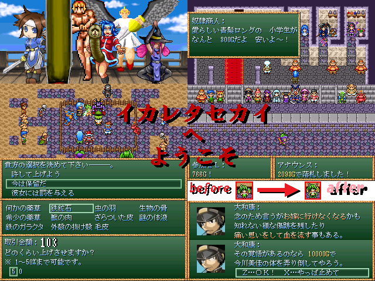

作品紹介
| ≪ Back | トップページ | 作品一覧 | Next ≫ |
| No002. - もしも黒い雨が―――。 |

| 使用ツール：ツクール２０００ |
| 作者：F-man |
| ジャンル：サバイバルＲＰＧ |
| 動画・配信：OK |
|
舞台は突然の災害で荒れ果てた日本 プレーヤーである貴方は何処からか現れ、アレックスの目の前で倒れている所を保護される。 貴方はこの荒れ果てた日本で何をして何を残し、また何を糧にして生きるのか。 独特のサバイバルＲＰＧ此処に有り―――！！！ ※このゲームは暴力・差別・非人道・表現が多彩です。 15才以上の良識のある方のPIAI推奨 ■■■■■■■■■■■■■■■■■■■■■■■■■■■■■■■■■■■ 以下PIAIする際の注意＋連絡事項 ・基本的なシステムは前作の「ちょこれーとあうと」をベースに ２Ｄマップを歩き、探索するオードソックスなＲＰＧです ・新システムはいくつか追加してますし 荒れ果てた世界ならではのお楽しみも存在します ・前作の「ちょこれーとあうと」の最新バージョンの真のエンドの クリアデータがあるとプレーヤー引き継ぎと一部イベントの変動があります ・配信は紅白の関係者や皆に迷惑のかからない範囲で自己責任でお願いします ・エンディングは一つですが過程と自分なりの解釈を楽しむＲＰＧです ゲームの攻略を意識すると楽しめないかも ・あなたにとって、もしもの世界とはなんでしょうか？ ・うどん拳はたぶん実在しません ・正直サバイバルって言うほどじゃない ・得られる物が大きい程、代償は大きいものである ■■■■■■■■■■■■■■■■■■■■■■■■■■■■■■■■■■■ |
| 管理人コメント：うどん県は日本にあります |
| ダウンロード(10.1MB) ① ② / 感想掲示板 ツイート |
更新情報・お知らせ
- 2011/01/09
- 本体修正 パッチ追加
- 2011/01/04
- 本体修正
- 2011/12/30
- 本体修正 パッチ追加
- 2011/12/29
- 本体修正 パッチ追加
- 2011/12/26
- 本体修正 パッチ追加
- 2011/12/23
- 提出
- 2011/11/27
- SSコメント変更
- 2011/10/30
- エントリー